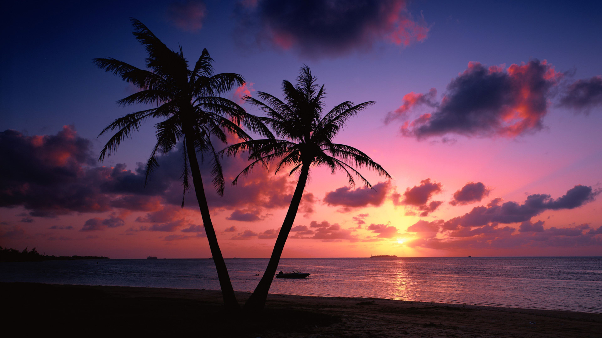

Goa

Reasons to visit Goa:
- Long known within India as the "go-to" destination for those seeking a great beach holiday, Goa's beautiful western coastline, overlooking the Arabian Sea, has only recently been discovered by tourists from overseas.
- Goa's more than 60 miles of coastline is home to some of the world's loveliest beaches, each with their own particular appeal. For those looking for peace and quiet, isolated Agonda Beach is a good choice, while Calangute Beach is by far the most commercial and crowded.
Things to do in Goa:
- For those in search of posh resorts, yoga getaways, and spa vacations, the beaches of Mandrem, Morjim, and Ashwem are fashionable among wealthy Indians and Westerners alike. Palolem is another popular option in a beautiful setting.
- While in Goa, be sure to visit the Bhagwan Mahavir Wildlife Sanctuary. This superb attraction is home to thick forests and plenty of fauna, including deer, monkeys, elephants, leopards, tigers, and black panthers-as well as India's famous king cobras-and some 200 species of birds.
- Also worth a visit is Divar Island, accessed by ferry from Old Goa. Highlights include Piedade, a typical Goan village and home to the Church of Our Lady of Compassion with its interesting stucco work, Baroque plaster decorations, and altars, as well as stunning views of the surrounding countryside.